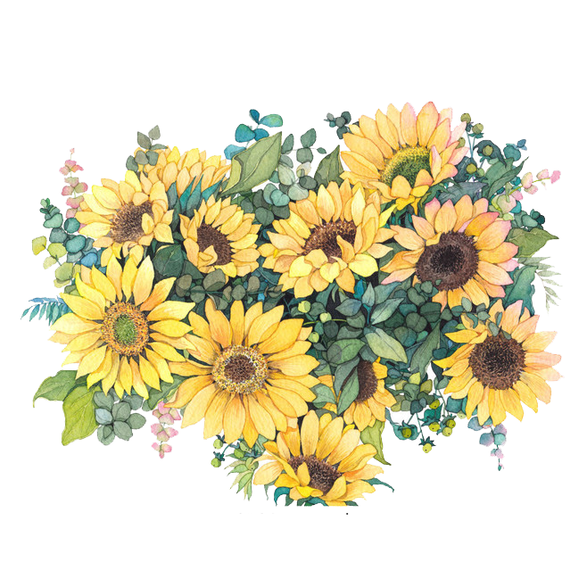

Hoy es un día especial,
y estas flores amarillas
son un pequeño recordatorio
de lo mucho que significas
por más bandida que seas.
output_stream

Las flores de verdad no están en este ramo:
las verdaderas flores estan en tu sonrisa